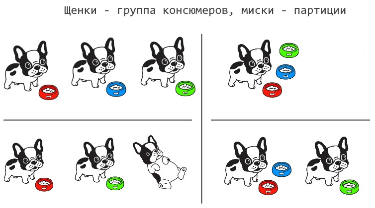

Kafka - распределенная система
Узлы
- Кафка - это распределенная система, т.е. можно взять несколько
серверов, запустить на каждом кафку и объединить их в кластер.
- Т.о. получить отказоустойчивость и горизонтальную масштабируемость.
- В проде имеет смысл выделять под каждый экземпляр кафки отдельный
сервер. Нет смысла на одном сервере запускать несколько экземпляров,
например на разных виртуальных машинах. Потому что, во-первых, они будут
конкурировать за ресурсы, значит никакой масштабируемости. А во-вторых,
если сервер ляжет, то лягут и оба экземпляра. Значит, никакой
отказоустойчивости.
- “Несколько кафок” на одном сервере имеет смысл только в учебных целях локально, чтобы тренироваться настраивать кластер.
- Кафка представляет собой один процесс в ОС (но в нем много потоков под разные цели).
- Сервер, на котором работает кафка, называется
узел.
Роли узла
- Кафка - это один процесс, который в зависимости от настроек может
выполнять две роли:
Контроллер- это узел, который берет на себя менеджерские обязанности.- Например, выбор нового лидера партиции при падении текущего лидера.
Брокер- узел, которых хранит данные топиков.
- Технически узел может совмещать две роли, но на практике принято разделять роли по разным узлам, чтобы управление и хранение не перемешивалось.
Прозводительность
- При создании топика кафка старается размазать его партиции
равномерно по всем брокерам кластера.
- Например, в топике 4 партиции и есть 4 брокера - идеальный случай, будет по одной партиции на брокере.
- Если будет 4 партиции и 3 брокера, значит на каком-то брокере будет 2 партиции.
- Поэтому рекомендуется делать количество партиций кратным количеству
брокеров, чтобы размазывание происходило равномерно: 3 брокера - 3 6 9
партиций, 4 брокера - 4 8 16 партиций и т.д.
- Это не жесткое требование, но хорошая практика.
Метаданные
Метаданные- это полная информация о кластере - сколько в нем брокеров, их адреса, сколько топиков, партиций, где они лежат, кто для них лидер и т.д.- Метаданные хранятся на всех узлах и автоматически обновляются по
мере появления изменений.
- Однако “источником истины” метаданных являются контроллеры.
- Клиент может подключиться к любому из брокеров, получить метаданные и по ним понять, к какому именно брокеру ему надо обращаться для непосредственной работы с топиком.
- Клиент перезапрашивает метаданные сам.
- По таймеру (автоматически каждые 5 минут).
- При появлении ошибок при работе с брокером.
Организация данных
Топик и партиции
Топик- делит хранимые данные по смыслу (“логическое” деление)- Например
- Трекинг система действий пользователя.
- В одном топике - клики, скроллы, переходы по страницам и т.д.
- В другом топике - когда зашел, когда вышел.
- В третьем - кого добавил в друзья, кого удалил.
- Система оформления заказов.
- По топику на заказы, платежи, уведовления.
- Трекинг система действий пользователя.
- Благодаря этому системы могут потреблять только нужные им данные, а не все подряд.
- Например
Партиции- это физическое хранение топика.- Один топик можно делить на несколько партиций.
- Это нужно для масштабируемости чтения и записи - сколько партиций, столько и консюмеров / продюсеров смогут параллельно читать / писать топик.
- Разумное практическое количество партиций на топик это 6-30. Но технически можно сделать даже несколько тысяч партиций на один топик. Расчет оптимального количества партиций - отдельная тема.
- Один топик можно делить на несколько партиций.
Сообщения
- Данные в кафке хранятся в виде
сообщений, т.е. сообщение - это единица хранения информации- Еще называют запись record
- Состав сообщения
- Ключ - используется для определения, в какую партицию положить сообщение
- Значение - полезная нагрузка сообщения
- Заголовки - дополнительная метаинформация
- Таймштамп - время создания сообщения
Продюсеры и консюмеры
Продюсеры- пишут сообщения в брокер (кафку)Консюмеры- читают сообщения из брокера
Способ хранения данных
- Кафка хранит данные в файлах на диске
- В оперативке хранится кэш
- Т.е. сперва идет чтение из оперативки и если там нужных данных нет, тогда читается с диска и помещается в кэш
- Партиция - это папка, а внутри нее лежат файлы -
сегменты- Это сделано чтобы старые данные можно было удобно удалять и при записи не приходилось работать с гигантским единым файлом
- Одна партиция хранится целиком на одном брокере
- Т.е. данные одной партиции не размазаны по нескольким брокерам, а хранятся в одном месте
- Но разные партиции могут храниться на разных брокерах, даже если
принадлежат одному топику
- Т.о. образом растет скорость работы с топиком за счет параллельной работы с партициями
Запись данных
Как определяется партиция
- Ключ сообщения проходит через хэш-функцию и на основе этого
определяется партиция, в которую попадет сообщение
- Так что сообщения с одним ключом гарантированно окажутся в одной партиции
- Партиция работает по приципу FIFO, новые данные записываются в конец очереди, а чтение идет с начала
- В качестве ключа надо выбрать такое значение, которое сгруппирует
связанные данные, когда это нужно и важен порядок. Очередь уже
гарантирует нам соблюдение порядка, нам остается выбрать ключ, чтобы все
связанные сообщения попадали в одну партицию
- Например, берем ключ vehicle_id. Автомобиль передает координаты своего движения, они попадают в брокер, в одну и ту же партицию. Порядок соблюден - так что какой-нибудь сервис может читать эти координаты и делать вычисления, рисовать маршрут на карте и т.д.
- Если ключ не задан, то кафка старается распределить данные
равномерно по партициям.
- Это достигается разными стратегиями, например
- round-robin
- sticky partitioning
- Такое поведение полезно в ситуациях, когда для консюмера не критичен
порядок получения сообщений и он может его восстановить сам по данным из
нагрузки.
- Например, метрики с датчика. Если у них есть временная метка, можно просто сохранять их себе в БД и строить графики на основе этой метки, а не порядке в очереди. Порядок в очереди важен например в транзакциях, командах микросервисов.
- Это достигается разными стратегиями, например
Семантика доставки
- Семантика доставки - это гарантии доставки сообщений, которые кафка дает продюсеру
- Три логических вида
at-most-once- “максимум один”.- Быстро и ненадежно. Просто отправил и все. Если сообщение не дошло, значит не повезло, оно не попадет в очередь.
at-least-once- “минимум один”- Надежно, но возможны дубли. Брокер отправляет продюсеру подтверждение сохранения. Если подтверждение потерялось по дороге, продюсер пошлет еще одно сообщение, которое брокер воспримет как новое. Получится дубль.
exactly-once- “точно один”- Самое медленное, но самое точное. Гарантия доставки и гарантия, что не будет дублей.
- Технически можно достигнуть этих семантик разными комбинациями опций отправки, но логически возможны все равно только три этих варианта
Особенности записи
Батчи
- Продюсер отправляет сообщения не по одному, а пачками
(
batch)- Это дает меньше сетевых вызовов.
- “Отправить пачку” фактически означает лишь поместить ее в очередь отправки, а когда она реально уйдет по сети - не продюсерская забора.
- Есть два параметра пачек
batch.size- размер пачки (по умолчанию 16кб)linger.ms(по умолчанию 0) - время, через которое надо точно отправить пачку, независимо от степени ее заполненности.
- Как это связано?
- Допустим ставим linger.ms 10
- Тогда продюсер будет накидывать сообщения в пачку либо пока она не заполнится полностью, либо пока не истечет это время.
- Заполнилась или вышло время - пачка отправляется как есть в очередь на отправку. При низкой нагрузке это означает, что пачка из одного сообщения не будет ждать вечно своего наполнения.
- Если linger.ms 0, то это означает не ждать наполнения пачки совсем, а отправлять ее сразу как поступило сообщение. Поэтому в теории это будут пачки из одного сообщения. Но на практике при высоких нагрузках даже при 0 в пачках может оказываться несколько сообщений.
- Допустим ставим linger.ms 10
Компрессия сообщений
- По умолчанию сообщения не сжимаются
- За компрессию отвечает параметр
compression.typeу продюсера- Там есть несколько вариантов gzip, snappy, lz4, zstd, отличаются скоростью работы и степенью сжатия
- При включенной компрессии продюсер сжимает пачку, она уходит в брокер в сжатом виде и в сжатом же виде попадает консюмеру и он сам ее распаковывает
Чтение данных
Консюмер
- Чтением данных из топика занимаются консюмеры
- Чтение происходит пачками, например консюмер читает сразу 100 сообщений и кладет себе в память
- Прочитанные сообщения не удаляются из кафки из-за самого факта чтения, они хранятся столько времени, сколько потребуется
- Один консюмер можно воспринимать как одного логического потребителя данных, например, приложение
- Несколько приложений - несколько разных консюмеров
- Один консюмер может читать несколько топиков
- Консюмер может подписаться на чтение топика, тогда партиция для него
назначится автоматически
- Но также есть возможность явно указать, из какой партиции читать. При этом если консюмер ляжет, другие консюмеры не смогут подхватить партицию за него
Группа консюмеров
- Для ускорения чтения приложение может использовать несколько консюмеров, при этом как бы логически они считаются одним консюмером.
- Это называется
consumer group- группа консюмеров. - Технически, даже если консюмер только один, он все равно оформлен как группа.
- Особенности организации группы консюмеров.
- Один консюмер из группы может читать одну или несколько партиций.
- Разные консюмеры из группы не могут читать одну и ту же партицию.
- Если один из консюмеров ляжет, то другой возьмет на себя его работу.
- Например, в топике 3 партиции
- Идеальный вариант - одинаковое количество консюмеров и партиций, получается каждому по одной. Максимальная производительность чтения.
- Если только один консюмер - он читает по кругу из всех 3 партиций (“один щенок может есть по очереди из всех трех мисок”).
- Если два консюмера - один читает например 1 и 2 партицию, а другой третью.
- Если 4 консюмера - то 3 консюмера будут читать, каждый по одной партиции, а еще один консюмер будет простаивать (“два щенка не могут есть из одной миски”)

Офсет
Offset- это само по себе просто номер сообщения в партиции- Но в контексте консюмеров имеется ввиду
сохраненный офсет, т.е. позиция, до которой дочитал конкретный консюмер - Офсет позволяет консюмеру не терять положение чтения
- Офсет характеризуется тремя вещами: id группы консюмеров, партицией и номером сообщения
Коммит офсета
- Офсет хранится в памяти консюмера и пока консюмер работает, он знает позицию чтения
- Но если консюмер упадет и следовательно офсет потеряется, то после восстановления консюмер не будет знать, откуда читать
- Поэтому периодически офсет надо коммитить
- Это позволит консюмеру или его товарищу из группы продолжить чтение с правильной позиции
- Коммит можно настроить либо
автоматический, либо делатьвручную- Это несовместимые способы - мы либо делаем вручную, либо автоматически, но не и то и другое вместе
- Автоматический коммит срабатывает по таймеру
- Автокоммит обычно используется для сценариев, где потеря чтений некритична (логи, метрики)
- Для бизнес-сценариев обычно используется ручной коммит из-за большей предсказуемости и контроля
Порядок сообщений при чтении
- Порядок сообщений соблюдается только в пределах партиции
- Если консюмер читает несколько партиций, то сообщения из них идут вперемешку
- Аналогично если консюмер читает из нескольких топиков, то их сообщения тоже идут вперемешку
Очистка данных
- Политика очистки данных (
cleanup.policy)- Удаление (
delete)- По двум триггерам
- Партиция превысила указанный размер - если суммарный размер
сегментов партиции превысил заданный размер, то кафка удаляет старые
сегменты
- Они будут удаляться, пока размер партиции снова не станет меньше, чем задано
- Сегмент стал очень старый (по умолчанию 7 дней) - если сегмент хранится дольше указанного времени, он удаляется
- Партиция превысила указанный размер - если суммарный размер
сегментов партиции превысил заданный размер, то кафка удаляет старые
сегменты
- По двум триггерам
- Сжатие (
compact)- Из неактивных сегментов удаляются все значения для каждого ключа,
кроме последнего
- Например, есть
id123: active,id123: processing,id123: disabledа после компакта останется толькоid123: disabled
- Например, есть
- Для нахождения сегментов, которые готовы к сжатию, используется отдельный фоновый процесс
- Из неактивных сегментов удаляются все значения для каждого ключа,
кроме последнего
- Удаление (
- Для каждой политики есть свои настройки, которые можно загуглить когда потребуется выполнять настройку
Отказоустойчивость
Репликация
- Отказоустойчивость достигается за счет
репликацииданных- Т.е. партиция хранится уже не на одном брокере, а на нескольких
- На скольки - определяет
Фактор репликации- Если фактор 2, значит партиция будет лежать на двух брокерах, если 3 - значит на трех и т.д.
- Фактор репликации не может быть больше количества брокеров
- Например, если брокеров 4, то фактор может быть 2 или 3, но не 5, потому что пятую копию просто физически некуда положить
- На скольки - определяет
- Один из брокеров становится лидером партиции (
leader), а остальные брокеры - фоловерами (follower)- Тут важно понять, что лидер - это термин, характеризующий именно комбинацию брокер+партиция. Т.е. один конкретный брокер является лидером для этой конкретной партиции, и одновременно фоловером для другой партиции. Нет такого что в кластере один брокер - как бы общий лидер. Лидерство всегда связано с партицией.
- Запись чтение всегда ведется в лидера
- Фоловеры синхронизируются с лидером и вступают в игру только когда
лидер падает
- Тогда кафка выбирает нового лидера из фоловеров
- Синхронизация данных происходит асинхронно, поэтому несмотря на все предосторожности есть небольшой шанс, что лидер упадет до синхронизации и тогда несинхронизированные данные потеряются
- Т.е. партиция хранится уже не на одном брокере, а на нескольких
acks и ISR
ISR- In-Sync Replicas - это список фоловеров, которые синхронизированы с лидером партиции- Есть параметр
replica.lag.time.max.ms(по умолчанию 30 сек) он определяет “срок свежести” для реплик. Если у фоловера последняя сихнронизация была больше 30 сек назад, он считается неактуальным - Лидер партиции ведет список ISR самостоятельно, регулярно проверяя
фоловеров и исключая их из списка
- Проверка ведется отдельным фоновым процессом, который работает по таймеру. По умолчанию это половина от установленного “срока свежести”
- Сам лидер всегда входит в этот список
- Возврат в список “свежих” происходит при синхронизации
- Список также передается в контроллер кластера, на случай если лидер упадет
- Есть параметр
acks- producer acknowledgements- Это параметр, указывает сколько фоловеров из списка ISR должны подтвердить получение сообщения, чтобы продюсер посчитал отправку успешной
- Значения
acks=0- не требуется подтверждений вообще ни от кого. Быстро и ненадежно.acks=1- требуется подтверждение только от лидера. Средняя скорость и средняя надежность.acks=all- требуется подтверждение от всех фоловеров, которые в данный момент в списке ISR. Низкая скорость, максимальная надежность.
Ребалансировка
- Ребалансировка бывает двух видов
- Ребалансировка партиций между брокерами
(
partition reassignment)- Происходит, когда в кластер добавляется новый брокер, т.к. нужно провести перераспределение партиций между брокерами
- Кафка автоматически этого не делает, надо запускать самостоятельно или настраивать автозапуск, иначе добавленный брокер будет просто простаивать
- Особенности
- Чтение из партиций не останавливается
- Ребалансировка консюмеров (
consumer rebalance)- Происходит, когда
- В группе консюмеров добавляется удаляется консюмер (добавили нового или упал один из работающих)
- Когда консюмер подписывается на дополнительный топик
- Кафка выполняет эту ребалансировку автоматически
- Особенности
- Чтение на время этой ребалансировки останавливается - никто из группы ничего не читает
- Происходит, когда
- Ребалансировка партиций между брокерами
(
Работа с ошибками
Dead Letter Queue
DLQ- это паттерн, при котором сообщение, которое не удалось обработать, мы отправляем в специальный топик- Для обработки таких топиков делаем отдельных консюмеров
🧑🍳 Практические сценарии использования
В каких случаях выбирать кафку?
- Как решить, что для коммуникации нужна именно кафка, а не например gRPC или REST?
По какому принципу создают топики?
В крупных системах можно выделить две основные стратегии:
- Один топик на доменную сущность (агрегат): все
события, связанные с одной сущностью (например,
OrderCreated,OrderPaid,OrderCancelled), отправляются в один топик, например,order-events. Это гарантирует строгий порядок обработки событий для одного заказа, так как они попадают в одну партицию. - Один топик на тип события: для каждого типа события
создается отдельный топик (
order-created,order-paid). Это упрощает логику консьюмера, так как каждый подписывается только на нужные ему события, но усложняет гарантию порядка для связанных событий.
Выбор зависит от приоритетов: если критичен порядок событий в рамках одного агрегата — выбирают подход с одним топиком на сущность. Если важнее простота и независимость консьюмеров — предпочитают топик на тип события.
TODO
- Больше про формат сообщений, про ключ, нагрузку, таймштамп, когда ключ задается. А то я смотрю на JSON, его поля и думаю, это блять что такое? Это нагрузка или прямо “часть сообщения кафки”?
- Как ключ влияет на партицию? Как-то сам указываешь что куда класть или кафка сама делает?
- Разобраться в способах увеличения пропускной способности. Например, как влияет отказ от ключа и выбор sticky partitioning на продюсера.